速览
完成游戏，调试不可或缺。这里不谈监测，只谈纯粹消灭 bug 的调试。买的游戏 bug 多，可能被说「是不是想着之后在线修就好」，但绝非如此：谁都想一开始就做到完美。问题在于现在的游戏规模已大到单纯调试消灭不尽。比如《大乱斗》斗士对斗士，斗士有 89 种，光这样就约 8000 种组合；两人用不同招式攻击，组合数再乘以各自招式数；还有只在特定瞬间才出的 bug；再加上道具、第三者及其攻击（也可能 4 人以上），再加上特定地形场景、机关、命魂……组合就成了天文数字。实际上要在改变条件的同时把这些全部反复几次，才算严密调试——全部做，当然不可能。另一方面，一旦出现的 bug，知道复现方法就能无限重现，所以在网上很显眼。当然不只是穷举，也会瞄准可疑处调试，但仍有极限。以《大乱斗 SP》为例特别容易出 bug 的地方：①抓和投等强制控制他人的行为，容易造成处理矛盾，招式中被抓就可能出问题；终极必杀相关也接近，尤其有场景切换的，不仅是对手的拘束与解除，场景里也可能残留垃圾。②地形：场地制作可以做出乱来的地形，这时一定程度的穿地只能容忍，尤其 V 字形凹陷很难。③命魂相关：能做超出一般游戏规格的各种事，测试非常辛苦。大乱斗以外，有参数和养成要素、技能逐渐解锁的作品也很痛苦。很多游戏都为如今的体量烦恼：通关要几十小时的游戏，累计调试时间要几千、几万甚至几十万小时。即使有想用之后的补丁马上修的东西，也不能修完立刻发布：修了某处就可能引入新 bug，修一个又要重新做非常多的检查。他说这次并非想请大家原谅某些问题，只是平淡地说明适用于所有游戏的事实：如果「不完美除 bug 就不能原谅」的风气蔓延，事实上游戏可能就出不了了。银行、航空、通信基础设施等故障致命的系统当然要拼命，但他希望了解游戏制作的情况后，大家的看法能有所改变——当然他也明白，作为制作方的自己没资格这么说。
1. 不是「之后再修」 0:02
完成游戏，调试不可或缺。这里不谈监测，只谈纯粹消灭 bug 的调试。
买到的游戏 bug 多，可能被说「是不是想着之后在线修就好」，但绝非如此——谁都想一开始就做到完美。
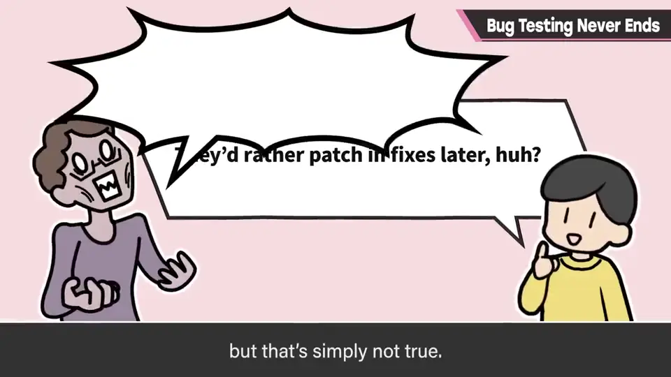
2. 天文数字的组合 0:38
比如《大乱斗》里斗士对斗士：斗士有 89 种，光这样就约有 8000 种组合。
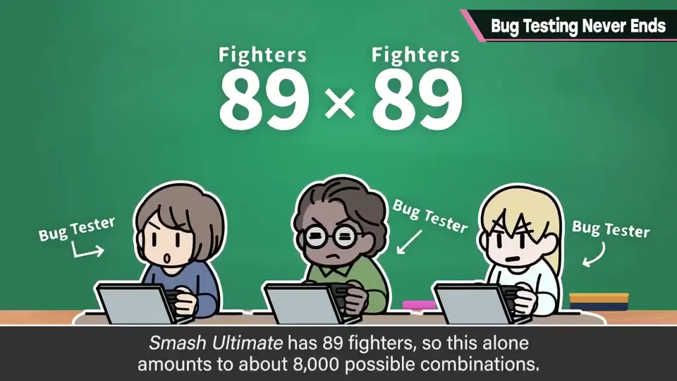
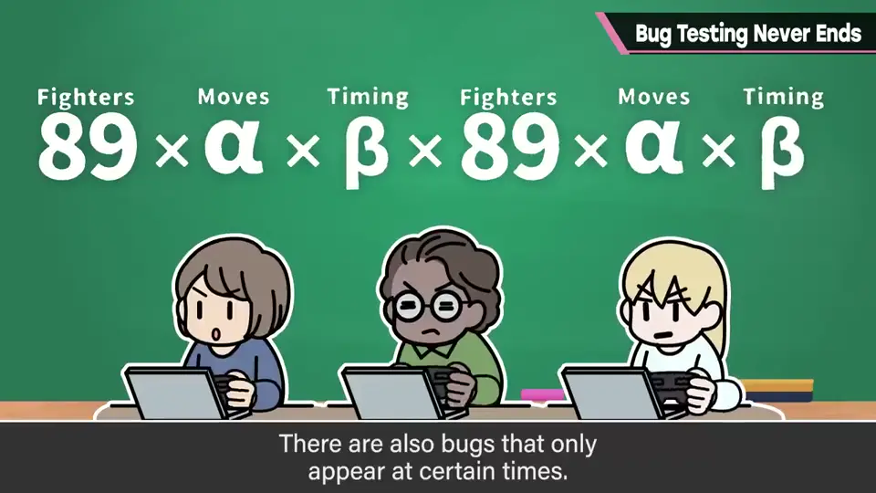
两人用不同招式攻击，组合数还要乘以各自的招式数；还有只在特定瞬间才会出现的 bug。
再加上道具、第三者及其攻击（也可能 4 人以上），再加上特定的地形、场景、机关、命魂……组合就成了天文数字。
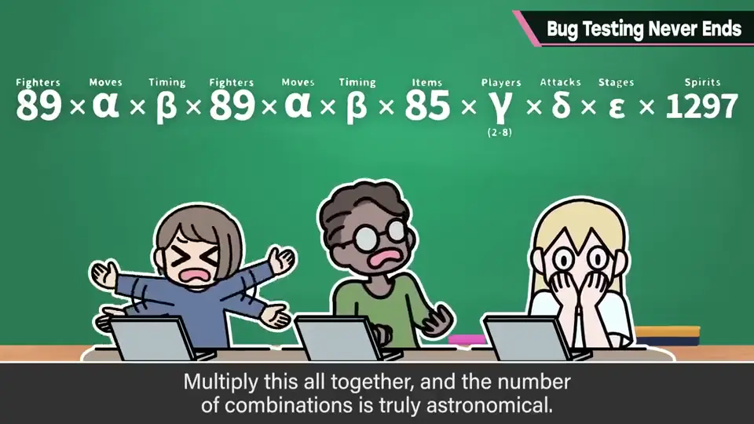
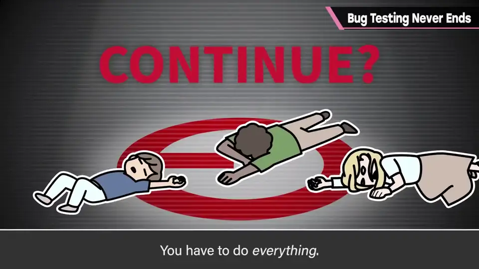
实际上要改变条件把这些全部反复做几次，才算达成严密的调试。全部都做——当然不可能。
3. 一旦被发现就很显眼 1:36
另一方面，一旦出现的 bug，只要知道复现方法就能无限重现，所以在网上会很显眼。
当然不只是穷举，调试也会瞄准可疑的地方，但仍有极限。
4. 特别容易出 bug 的地方 1:53
以《大乱斗 SP》为例：首先是抓、投等强制控制他人的行为，容易造成处理矛盾——招式中被抓住就可能出问题。
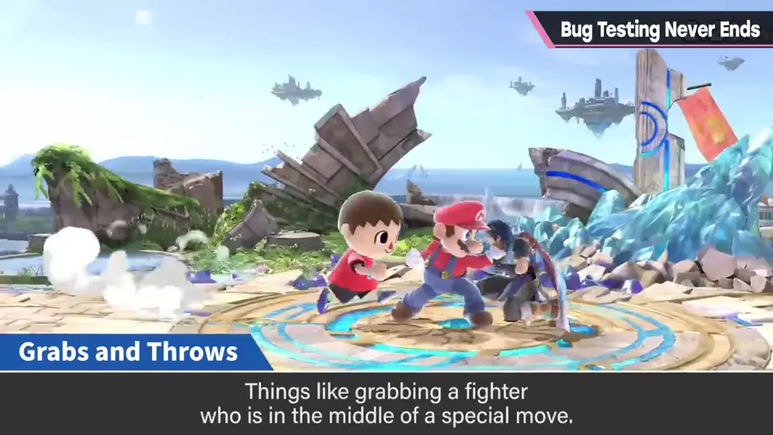
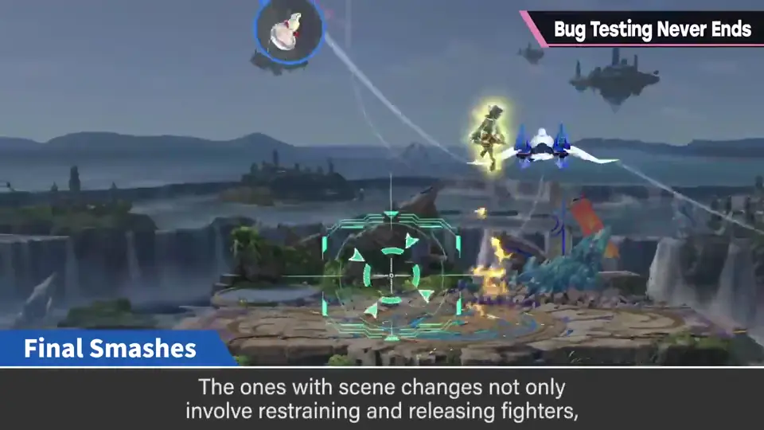
终极必杀相关也接近，尤其是有场景切换的，不只是对手的拘束与解除，场景里还可能残留垃圾。
其次是地形：在场景制作里可以做出很乱来的地形，这种情况下一定程度的穿地只能容忍，特别是 V 字形凹陷很难处理。
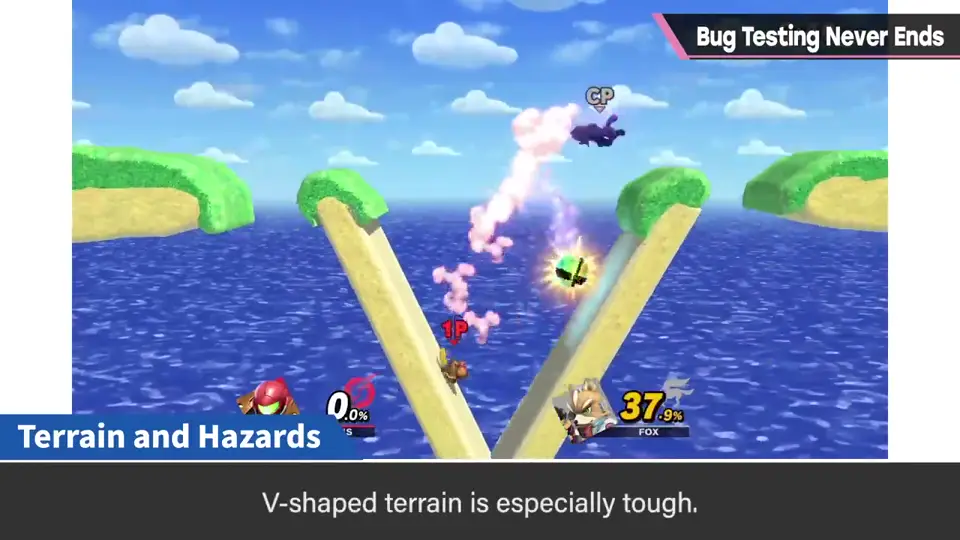
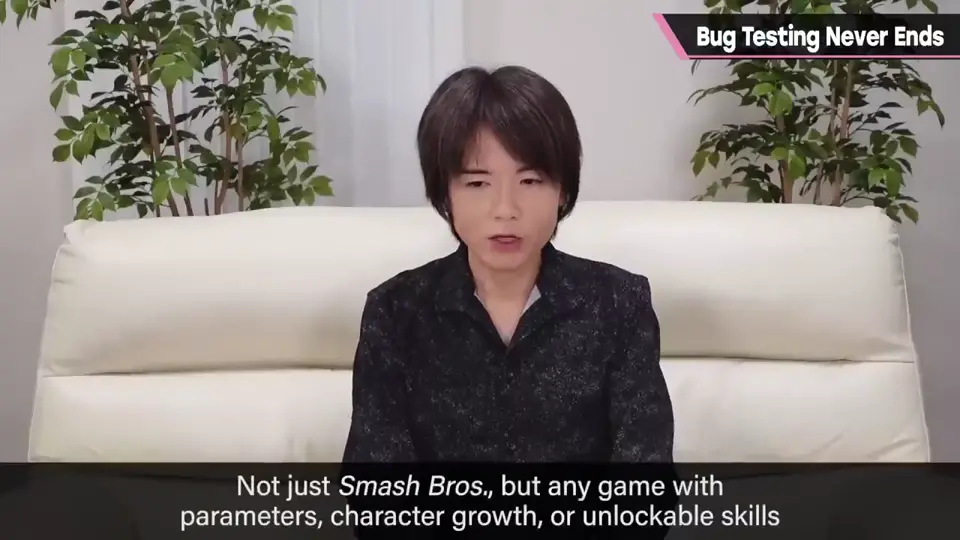
命魂相关也可能出各种问题：能做超出一般游戏规格的各种事，测试非常辛苦。大乱斗以外，有参数和养成要素、技能逐步解锁的作品也会很痛苦。
5. 体量与补丁 2:55
很多游戏都在为如今的体量烦恼。通关要几十小时的游戏，累计调试时间会达到几千、几万甚至几十万小时。
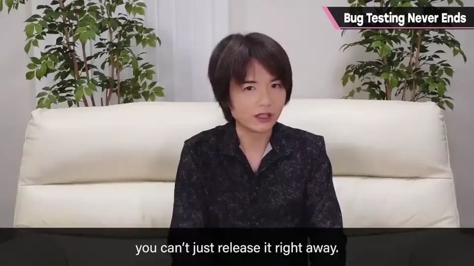
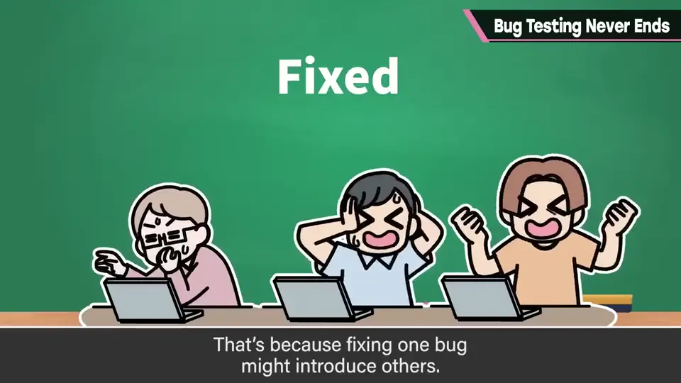
即使有想用之后的补丁马上修的问题，也不能修完立刻发布：修了某处就可能引入新 bug，修一个就要重新做非常多的检查。
6. 平淡陈述事实 3:31
樱井说，这次并没有想请大家原谅某些问题的意图，只是平淡地说明适用于所有游戏的事实。
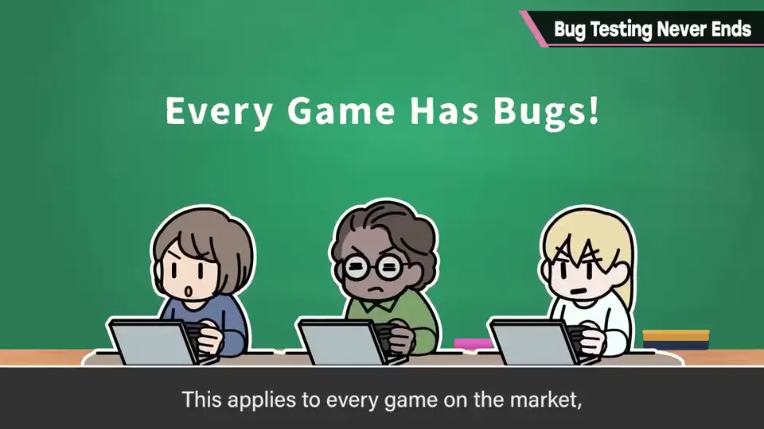
银行、航空、通信基础设施等故障致命的系统当然要拼命；但他希望大家了解游戏制作的情况后，看法能有所改变——当然他也知道，作为制作方的自己没资格这么说。
自测题
1. 为什么现代游戏难以完全消灭 bug？
规模太大，组合（斗士×招式×时机×道具×人数×场地×命魂…）是天文数字，不可能全部穷举。 0:38
2. 《大乱斗 SP》中特别容易出 bug 的地方有哪些？
抓投等强制控制、终极必杀（尤其有场景切换的）、地形（V 字凹陷）、命魂。 1:53
3. 为什么补丁不能修完马上发布？
修正可能引入新 bug，需要重新做大量检查。 3:10